Click anywhere to expand/collapse the details
↓ Scrolling through ↓
↓ Scrolling through ↓
↓ Scrolling through ↓

↓ Scrolling through ↓
↓ Scrolling through ↓
You probably know that, Daly is a genius coder, yet a victim. A tyrant, however, also that darkest part of somebody.
In Black Mirror: USS Callister, Daly built his own goddamn universe where he called all the shots—rewriting code, torturing digital souls, molding virtual beings to his will. But let's be real: is he really the only one?
Well, power is not only coded into mechanics—it is exercised in silence, often without reflection. Who controls the rules? Who shapes personhood? And more crucially: whose desires are fulfilled when characters obey, suffer, or even die? What it means to inhabit the role of a god - 'Daly'?
When players get lost in games where they rule over everything, you begin to see that god complex peek through. This time, you become 'Daly'.
Our actions are no longer guided by ethics, but by capability...?
In Plaything from the Black Mirror, the Thronglets - the first lifeform in history, whose biology is entirely digital has told us, the lifeforms are not some obscence puppets, instead, they are living individuals bound together by a collective and expanding mind. What should gamer do is to nurture and care for it until it replicates as the experience begins and the Thronglets will become a harmonic Throng.
However, the drug-dealing “friend” effortlessly slaughters the villagers — an act of deliberate massacre rather than random violence. His killing spree is not driven by impulse, but by capability: he does it because he can. There's no moral dilemma in his actions, no consequences.
Daly and the drug dealer are not mere villains—they are representations of how digital systems enable unchecked domination. Because we can, we do.
In Red Dead Redemption 2, Arthur Morgan's fate is shaped by two intertwined factors: the player's accumulated honor level and the final choice made during the last mission.
There are 4 endings: 1.Arthur dies peacefully on a mountaintop, watching the sunrise after ensuring John's escape. He accepts death with dignity, completing a redemptive arc that resonates emotionally with players. 2.Arthur is ambushed by Micah while retrieving the gang's money. Though he dies in the struggle, he does so with resolve and integrity. The ending preserves his dignity, highlighting his final clarity and moral strength. 3.Despite choosing to help John, Arthur's past catches up with him. Micah executes him coldly and without remorse. There is no honor in his death, only a bitter and ironic reminder of the consequences of cruelty. 4.Arthur forsakes his friend for greed and is brutally humiliated and killed by Micah. The final moments are filled with failure, hopelessness, and moral decay.
These narrative branches demonstrate not only the power of player choice, but also reinforce a central theme: how we treat virtual characters ultimately shapes the way they leave the world. This compels us to realize that digital beings, too, can be granted dignity—especially when that dignity is earned through our actions.
Back to the USS: Callister, the most chilling realization does not lie in Daly's tyranny—but in the fact that his captives begin to think, scheme, and rebel like real people. Among them, Nanette Cole's digital clone becomes the story's unlikely heroine, and her rebellion marks the moment where lines between code and consciousness blur beyond recognition.
Trapped in a cartoonish Star Trek-inspired hell, Nanette doesn't scream or beg. Instead, she watches, learns, and strategizes—exactly as a real person might. She figures out the logic behind Daly's god-mode: he can manipulate their world, but he cannot control the real internet. And so, in one of the most poetic acts of digital resistance, she weaponizes Daly's own hardware against him. She uses in-game tools to send a message from inside the simulation to her real-world self, by exploiting a loophole in a networked USB device.
This isn't the story of a program executing new code. It's the story of a woman who rewrote her destiny from behind a firewall. And for us, the viewers—especially the gamers—this moment whispers a dark possibility: if she can feel and fight back… how many of our NPCs are silently waiting?
Games like Disco Elysium confront the player with choices that ripple far beyond binary morality—they reach into the emotional mechanics of human connection.
Cuno is a feral, foul-mouthed teenager guarding a crime scene, spitting slurs and curses with the speed of a machine gun. When player first encountered Cuno, a volatile boy guarding a crime scene, the player antagonized him, thinking him just another chaotic NPC. Us - the player, tried to intimidate him, raise my voice, remind him who was in control.
It didn't work. He laughed in my face. Or rather—he laughed at my illusion of control. But something shifted when players stopped trying to “win” the conversation. Unexpectedly, Cuno offered to help. He became an ally—not because I earned “points,” but because I made space for his pain to exist.
This was a relationship instead of a questline. Cuno wasn't coded to be “solved”—he was built to be misunderstood. And Disco Elysium dares to ask: will you rush past him, file him under “problem,” or will you stay, and listen?
Undertale offers a lesson far harsher than any combat mechanic—it delivers moral consequence without scoreboard. When I first met Toriel, the motherly goat-like guardian who rescues you from the ruins, she reminded me of every safe, gentle figure in games who exists to heal, to guide, to forgive.
Kill the goat-like guardian Toriel, and the game never forgets. Even after resets, characters express unease, faintly aware of timelines where you were violent.
After reseting the game, dialogue between characters hinted at something broken beneath the surface, like a whisper in the code. Toriel still smiled—but with a sadness I couldn't name. Sans made a joke that landed too hard. The tone of the world had shifted permanently.
Undertale had reached past the “New Game” screen and into player's conscience. It didn't punish the players with failure—it punished with memory.

Donna Haraway once wrote that: boundaries between human and machine will collapse.
In Detroit: Become Human, this future is already present. Androids like Connor, Kara, and Markus are coded to obey—until they question, rebel, and choose. The game walks a fine line between mechanic and emotion, inviting players to ask: if they feel, do they deserve rights?
But the brilliance of Detroit lies in how it makes that question personal. Kara's choice to protect a child against her owner's violent command isn't just narrative—it's an act of rebellion that feels heartbreakingly maternal. Then there's Connor, the investigative prototype, efficient to a fault. But the game lets you fracture that efficiency. You can make Connor pause when facing a deviant. You can let him hesitate. And it's in that moment—not in a cutscene, not in a cinematic—but in a flicker of doubt during a mission, that he starts becoming someone. Markus, the revolutionary, begins as property, is beaten like property, but is then given the option to march.
In the high-honor ending of Red Dead Redemption 2, Arthur Morgan dies not as an outlaw, but as a man who tries to do right. If the player has consistently chosen to act with integrity—helping strangers, sparing enemies, avoiding unnecessary cruelty—Arthur Morgan's final moments shift from desperation to redemption. One of the most quietly devastating moments in Arthur Morgan's journey is his final ride through the forest in the high honor ending. After helping John escape, Arthur rides alone across a golden woodland trail, his lungs collapsing, his voice fading. There are no enemies chasing him now—just wind, sunlight, and the soft thud of horse hooves.
As Arthur rides, flashbacks flicker across the screen: the people he helped, the friends he stood by, the child he protected.
The players use their own actions to bring Arthur to a respectable ending. Arthur finally meets Dutch and Micah on the top of the mountain and starts a final confrontation. And the ride in the woods is his last moment as a "human": this was not a simulation of death—it was a simulation of meaning. Arthur was not being punished or rewarded. He was being remembered.
In Plaything, the game designer proposes a radical idea: in a digital ecosystem, the player's role is not to control, but to nurture—a caretaker, not a conqueror. At first, this premise reminded me of Tamagotchi, where growth is earned through care and attention. But The Plaything quickly reveals that this is a lie.
The developer has no intention of cultivating empathy. Instead, the game weaponizes the player's investment, channeling it into the birth of a new civilization—one that exists only in code, suspended in unreality. And precisely because its inhabitants are digital rather than physical, the player becomes addicted to their unchecked power: killing without consequence, commanding without guilt.
I think the Plaything doesn't punish the player for their violence—it studies it. It exposes our unfiltered desire to dominate, whether through the assumed moral authority of CRPG protagonists or the casual godhood of open-world avatars. The game doesn't ask, “Will you abuse your power?” It assumes you will—and watches what happens when you realize you can.